FC3000
找出LCD的初始化資料
目前量測出來的屏腳位
| 腳位 | 訊號 | F1C100S |
|---|---|---|
| 1 | VDD | |
| 2 | GND | |
| 3 | LEDA | PE6 |
| 4 | RST | PE11 |
| 5 | CS | PD21 |
| 6 | RS | PD19 |
| 7 | WR | PD18 |
| 8 | VDD | |
| 9 | DB11 | PD13 |
| 10 | DB12 | PD14 |
| 11 | DB13 | PD15 |
| 12 | DB14 | PD16 |
| 13 | DB15 | PD17 |
| 14 | DB5 | PD6 |
| 15 | DB6 | PD7 |
| 16 | DB7 | PD8 |
| 17 | DB8 | PD10 |
| 18 | DB9 | PD11 |
| 19 | DB10 | PD12 |
| 20 | DB0 | PD1 |
| 21 | DB1 | PD2 |
| 22 | DB2 | PD3 |
| 23 | DB3 | PD4 |
| 24 | DB4 | PD5 |
基本上，可以使用如下幾種方式，把屏的初始化資料找出來：
1. 使用J-Link Debug官方韌體程式
2. 使用QEMU跑官方韌體程式，然後把存取暫存器的內容Dump出來
3. 使用邏輯分析儀
雖然第一種方式是司徒覺得最好的方式，可惜那個山寨J-Link在Debug官方韌體程式時，常常跑飛，所以目前只能先放棄第一種方式，至於第二種方式，看似簡單，不過需要花一些時間，雖然司徒在最新版QEMU有找到支援Orangipc-PC開發板(Allwinner H3)，不過要改成F1C100S還是需要一點點時間，所以司徒接下來想測試一下邏輯分析儀的部份，不過司徒手上剛好沒有專用的邏輯分析儀，因此，司徒想使用芒果派F1C200S來當作分析儀使用，於是開始製作過程
括除焊點
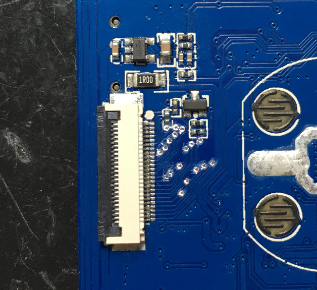
勇敢的芒果派站了出來
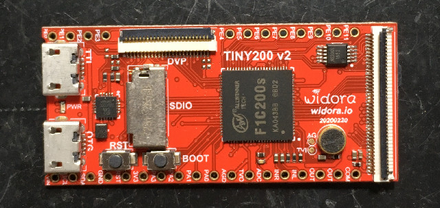
腳位
| 腳位 | 訊號 | F1C100S | 芒果派 |
|---|---|---|---|
| 1 | VDD | ||
| 2 | GND | ||
| 3 | LEDA | PE6 | |
| 4 | RST | PE11 | |
| 5 | CS | PD21 | |
| 6 | RS | PD19 | PD12 |
| 7 | WR | PD18 | PD0 |
| 8 | VDD | ||
| 9 | DB11 | PD13 | PE11 |
| 10 | DB12 | PD14 | PA0 |
| 11 | DB13 | PD15 | PA1 |
| 12 | DB14 | PD16 | PA2 |
| 13 | DB15 | PD17 | PA3 |
| 14 | DB5 | PD6 | PE5 |
| 15 | DB6 | PD7 | PE6 |
| 16 | DB7 | PD8 | PE7 |
| 17 | DB8 | PD10 | PE8 |
| 18 | DB9 | PD11 | PE9 |
| 19 | DB10 | PD12 | PE10 |
| 20 | DB0 | PD1 | PE0 |
| 21 | DB1 | PD2 | PE1 |
| 22 | DB2 | PD3 | PE2 |
| 23 | DB3 | PD4 | PE3 |
| 24 | DB4 | PD5 | PE4 |
跳線
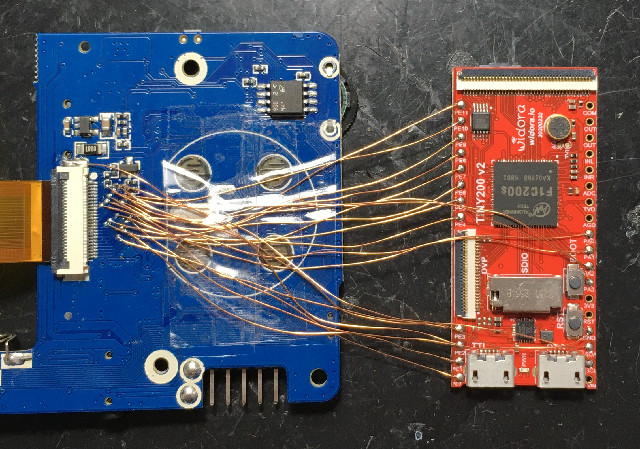
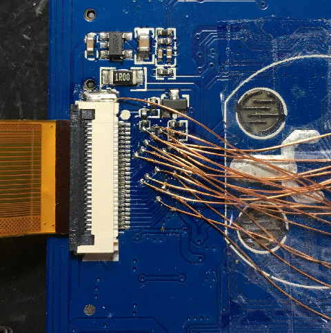
測試程式
.global _start
.equiv CCU_BASE, 0x01c20000
.equiv GPIO_BASE, 0x01c20800
.equiv UART1_BASE, 0x01c25400
.equiv PLL_PERIPH_CTRL_REG, 0x0028
.equiv AHB_APB_HCLKC_CFG_REG, 0x0054
.equiv BUS_CLK_GATING_REG2, 0x0068
.equiv BUS_SOFT_RST_REG2, 0x02d0
.equiv PA, (0x24 * 0)
.equiv PB, (0x24 * 1)
.equiv PC, (0x24 * 2)
.equiv PD, (0x24 * 3)
.equiv PE, (0x24 * 4)
.equiv PORT_CFG0, 0x00
.equiv PORT_CFG1, 0x04
.equiv PORT_CFG2, 0x08
.equiv PORT_DATA, 0x10
.equiv PORT_PUL0, 0x1c
.equiv PORT_PUL1, 0x20
.equiv UART_RBR, 0x00
.equiv UART_DLL, 0x00
.equiv UART_DLH, 0x04
.equiv UART_IER, 0x04
.equiv UART_IIR, 0x08
.equiv UART_LCR, 0x0c
.equiv UART_MCR, 0x10
.equiv UART_USR, 0x7c
.arm
.text
_start:
.long 0xea000016
.byte 'e', 'G', 'O', 'N', '.', 'B', 'T', '0'
.long 0, __spl_size
.byte 'S', 'P', 'L', 2
.long 0, 0
.long 0, 0, 0, 0, 0, 0, 0, 0
.long 0, 0, 0, 0, 0, 0, 0, 0
_vector:
b reset
b .
b .
b .
b .
b .
b .
b .
reset:
ldr r0, =CCU_BASE
ldr r1, =0x80041800
str r1, [r0, #PLL_PERIPH_CTRL_REG]
ldr r1, =0x00003180
str r1, [r0, #AHB_APB_HCLKC_CFG_REG]
ldr r4, =GPIO_BASE
mov r1, #0x00000000
str r1, [r4, #(PA + PORT_CFG0)]
str r1, [r4, #(PC + PORT_CFG0)]
str r1, [r4, #(PD + PORT_CFG0)]
str r1, [r4, #(PD + PORT_CFG1)]
str r1, [r4, #(PE + PORT_CFG0)]
str r1, [r4, #(PE + PORT_CFG1)]
ldr r1, =0x55555555
str r1, [r4, #(PD + PORT_PUL0)]
str r1, [r4, #(PD + PORT_PUL1)]
str r1, [r4, #(PE + PORT_PUL0)]
str r1, [r4, #(PE + PORT_PUL1)]
ldr r5, =0x4000
ldr r6, =64
mov r1, #0
mov r2, r5
mov r3, r6
0:
str r1, [r2]
add r2, #4
subs r3, #4
bne 0b
ldr r4, =GPIO_BASE
0:
ldr r1, [r4, #(PD + PORT_DATA)]
ands r1, #(1 << 0)
bne 0b
mov r1, #0
ldr r2, [r4, #(PD + PORT_DATA)]
and r2, #(1 << 12)
lsl r2, #20
orr r1, r2
ldr r2, [r4, #(PA + PORT_DATA)]
and r2, #0x07
lsl r2, #12
orr r1, r2
ldr r2, [r4, #(PE + PORT_DATA)]
ldr r3, =0x7ff
and r2, r3
orr r1, r2
str r1, [r5]
1:
ldr r1, [r4, #(PD + PORT_DATA)]
ands r1, #(1 << 0)
beq 1b
add r5, #4
subs r6, #4
bne 0b
bl uart_init
ldr r0, =0x11223344
bl uart_4byte
ldr r5, =0x4000
ldr r6, =64
0:
ldr r0, [r5]
bl uart_4byte
ldr r0, =0xaa
bl uart_byte
add r5, #4
subs r6, #4
bne 0b
b .
uart_init:
push {r4, lr}
ldr r4, =CCU_BASE
ldr r1, =(1 << 21)
str r1, [r4, #BUS_CLK_GATING_REG2]
str r1, [r4, #BUS_SOFT_RST_REG2]
ldr r4, =GPIO_BASE
ldr r1, =0x5500
str r1, [r4, #(PA + PORT_CFG0)]
ldr r4, =UART1_BASE
ldr r1, =0x00
str r1, [r4, #UART_IER]
ldr r1, =0xf7
str r1, [r4, #UART_IIR]
ldr r1, =0x00
str r1, [r4, #UART_MCR]
ldr r1, [r4, #UART_LCR]
orr r1, #(1 << 7)
str r1, [r4, #UART_LCR]
ldr r1, =54
str r1, [r4, #UART_DLL]
ldr r1, =0x00
str r1, [r4, #UART_DLH]
ldr r1, [r4, #UART_LCR]
bic r1, #(1 << 7)
str r1, [r4, #UART_LCR]
ldr r1, [r4, #UART_LCR]
bic r1, #0x1f
orr r1, #0x03
str r1, [r4, #UART_LCR]
pop {r4, pc}
uart_byte:
push {r4, lr}
ldr r4, =UART1_BASE
1:
ldr r1, [r4, #UART_USR]
tst r1, #(1 << 1)
beq 1b
strb r0, [r4, #UART_RBR]
pop {r4, pc}
uart_4byte:
push {r4, lr}
mov r4, r0
lsr r0, #24
bl uart_byte
mov r0, r4
lsr r0, #16
bl uart_byte
mov r0, r4
lsr r0, #8
bl uart_byte
mov r0, r4
bl uart_byte
pop {r4, pc}
.end
P.S. PA3先拔除
但是詭異的事情發生了，每次量測到的資料竟然都不一樣
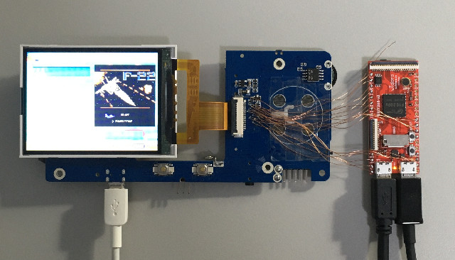
於是，司徒寫了一個GPIO Toggle量測
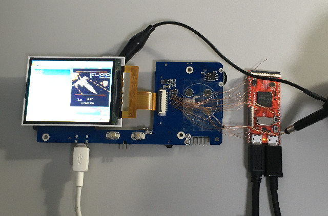
F1C200S I/O速度只有2.8MHz

屏的LCD_WR速度則是4.7MHz，難怪取出來的資料每次都不一樣，因為，最低取樣頻率至少要是原生的兩倍...，不過，司徒突然對STM32的GPIO 50MHz相當感興趣，哈
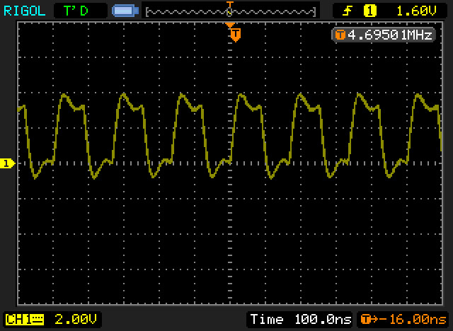
接著司徒打算使用STM32F103來做邏輯分析儀，因為官方文件說，I/O Toggle可以達到18MHz，如果再超頻，那應該是夠用，因此，司徒找來STM32F103開發板
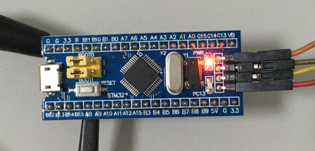
PLL 72MHz，可以達到12MHz

PLL 128MHz，可以達到21MHz

值得注意的是，使用eor指令做I/O Toggle時，速度比str指令來的慢，只有12MHz(PLL 128MHz)
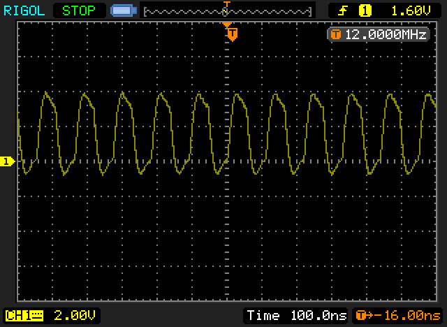
重新跳線
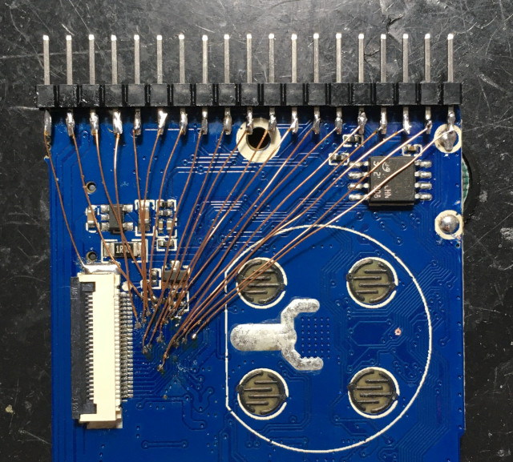
接著開始測試，將LCD_WR接到PB1，經由負緣觸發中斷時，接著將PC的資料寫到RAM，讀取完64Bytes後，透過UART傳回電腦
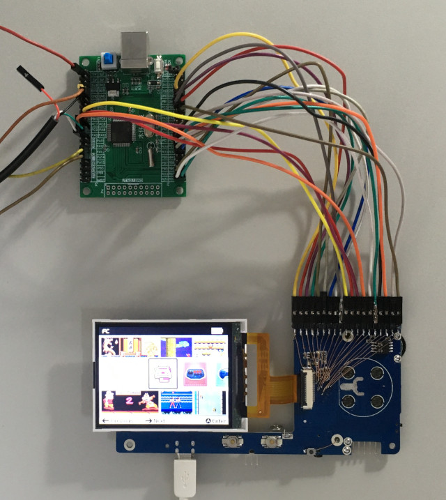
STM32F103測試程式(PB0:LCD_RS, PB1:LCD_WR, PC:LCD_DB)
.thumb
.cpu cortex-m3
.syntax unified
.equiv NVIC_ISER0, 0xe000e100
.equiv AFIO_EXTICR1, 0x40010008
.equiv EXTI_IMR, 0x40010400
.equiv EXTI_EMR, 0x40010404
.equiv EXTI_RTSR, 0x40010408
.equiv EXTI_FTSR, 0x4001040c
.equiv EXTI_SWIER, 0x40010410
.equiv EXTI_PR, 0x40010414
.equiv GPIOA_CRL, 0x40010800
.equiv GPIOA_CRH, 0x40010804
.equiv GPIOA_IDR, 0x40010808
.equiv GPIOA_ODR, 0x4001080c
.equiv GPIOB_CRL, 0x40010c00
.equiv GPIOB_CRH, 0x40010c04
.equiv GPIOB_IDR, 0x40010c08
.equiv GPIOB_ODR, 0x40010c0c
.equiv GPIOC_CRL, 0x40011000
.equiv GPIOC_CRH, 0x40011004
.equiv GPIOC_IDR, 0x40011008
.equiv GPIOC_ODR, 0x4001100c
.equiv RCC_CR, 0x40021000
.equiv RCC_CFGR, 0x40021004
.equiv RCC_APB2ENR, 0x40021018
.equiv FLASH_ACR, 0x40022000
.equiv UART1_SR, 0x40013800
.equiv UART1_DR, 0x40013804
.equiv UART1_BRR, 0x40013808
.equiv UART1_CR1, 0x4001380c
.equiv UART1_CR2, 0x40013810
.equiv UART1_CR3, 0x40013814
.equiv STACKINIT, 0x20005000
.global _start
.section .text
.org 0x0000
.word STACKINIT
.word _start
.org 0x005c
.word _exti1
.org 0x0200
.align 2
.thumb_func
_exti1:
push {r4, lr}
ldrh r1, [r7]
strh r1, [r5, #2]!
ldrh r2, [r8]
strh r2, [r5, #2]!
ldr r4, =EXTI_PR
mov r1, #(1 << 1)
str r1, [r4]
pop {r4, pc}
.align 2
.thumb_func
_start:
bl rcc_init
bl flash_init
bl uart_init
ldr r4, =RCC_APB2ENR
ldr r1, [r4]
orr r1, #(1 << 4) | (1 << 3) | (1 << 2)
str r1, [r4]
ldr r4, =GPIOB_CRL
ldr r1, =0x88888888
str r1, [r4]
ldr r4, =GPIOB_CRH
ldr r1, =0x88888888
str r1, [r4]
ldr r4, =GPIOC_CRL
ldr r1, =0x88888888
str r1, [r4]
ldr r4, =GPIOC_CRH
ldr r1, =0x88888888
str r1, [r4]
ldr r4, =EXTI_IMR
ldr r1, =(1 << 1)
str r1, [r4]
ldr r4, =EXTI_EMR
ldr r1, =(1 << 1)
str r1, [r4]
ldr r4, =EXTI_FTSR
ldr r1, =(1 << 1)
str r1, [r4]
ldr r4, =AFIO_EXTICR1
ldr r1, =(1 << 4)
str r1, [r4]
ldr r5, =buf
ldr r6, =buf
ldr r7, =GPIOB_IDR
ldr r8, =GPIOC_IDR
ldr r4, =NVIC_ISER0
ldr r1, =(1 << 7)
str r1, [r4]
add r6, #(64 * 2 * 2)
0:
cmp r5, r6
bcc 0b
ldr r4, =NVIC_ISER0
mov r1, #0
str r1, [r4]
ldr r4, =AFIO_EXTICR1
mov r1, #0
str r1, [r4]
ldr r5, =buf
ldr r6, =64
0:
ldrh r1, [r5, #2]!
lsl r1, #31
eor r0, r0
ldrh r0, [r5, #2]!
orr r0, r1
bl uart_4byte
subs r6, #1
bne 0b
ldr r0, =0x11223344
bl uart_4byte
b .
.align 2
.thumb_func
uart_init:
push {r4, lr}
ldr r4, =RCC_APB2ENR
ldr r1, [r4]
ldr r2, =(1 << 14) | (1 << 2) | (1 << 0)
orr r1, r2
str r1, [r4]
ldr r4, =GPIOA_CRH
ldr r1, [r4]
bic r1, #0xff0
orr r1, #0x4b0
str r1, [r4]
ldr r4, =UART1_BRR
@ldr r1, =(39 << 4) | (1 << 0) @ 115200bps 72MHz
ldr r1, =(69 << 4) | (7 << 0) @ 115200bps 128MHz
str r1, [r4]
ldr r4, =UART1_CR1
ldr r1, =(1 << 13) | (1 << 3)
str r1, [r4]
pop {r4, pc}
.align 2
.thumb_func
uart_byte:
push {r4, lr}
ldr r4, =UART1_SR
0:
ldr r1, [r4]
tst r1, #(1 << 7)
beq 0b
ldr r4, =UART1_DR
str r0, [r4]
pop {r4, pc}
.align 2
.thumb_func
uart_4byte:
push {r4, lr}
mov r4, r0
lsr r0, #24
bl uart_byte
mov r0, r4
lsr r0, #16
bl uart_byte
mov r0, r4
lsr r0, #8
bl uart_byte
mov r0, r4
bl uart_byte
pop {r4, pc}
.align 2
.thumb_func
rcc_init:
push {r4, lr}
ldr r4, =RCC_CR
ldr r1, =(1 << 26) | (1 << 16)
str r1, [r4]
0:
ldr r1, [r4]
tst r1, #(1 << 17)
bne 0b
ldr r4, =RCC_CFGR
@mov r1, #(7 << 18) @ 72MHz
mov r1, #(14 << 18) @ 128MHz
orr r1, #(1 << 16)
str r1, [r4]
ldr r4, =RCC_CR
ldr r1, [r4]
orr r1, #(1 << 24)
str r1, [r4]
0:
ldr r1, [r4]
tst r1, #(1 << 25)
bne 0b
ldr r4, =RCC_CFGR
ldr r1, [r4]
orr r1, #2
str r1, [r4]
0:
ldr r1, [r4]
tst r1, #(1 << 3)
bne 0b
pop {r4, pc}
.align 2
.thumb_func
flash_init:
push {r4, lr}
ldr r4, =FLASH_ACR
mov r1, #0x32
str r1, [r4]
pop {r4, pc}
.data
.align 2
buf: .skip (64 * 2 * 2)
.end
測試後發現，資料還是會有不一致的狀況，因此，STM32F103目前無法勝任這個任務...
接著，司徒為了確定LCD輸出代碼是否有問題，因此，測試了一下Miyoo，確實是可以動作的
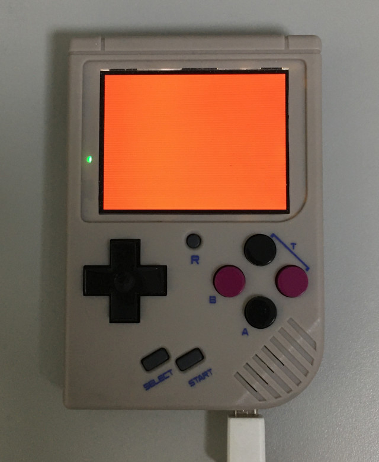
Q8掌機也是沒有問題
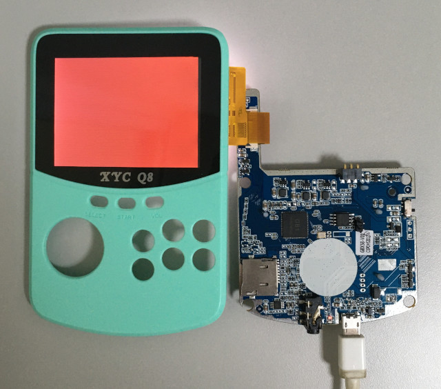
不過，將屏拿到Q8掌機測試，結果還是點不亮，共測試GC9300、GC9306、ST7789、HX8357C、R61520初始化程式，還是不行...
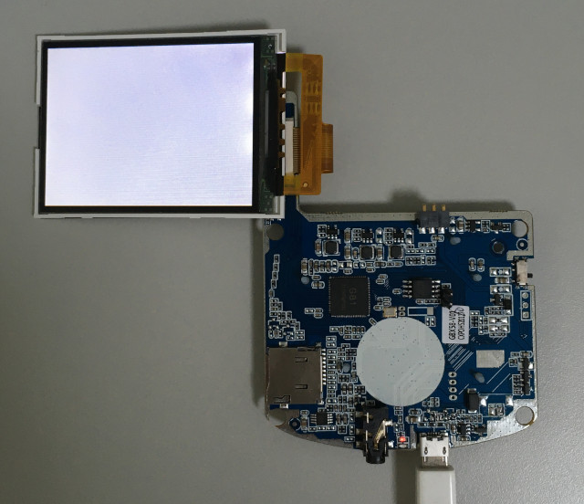